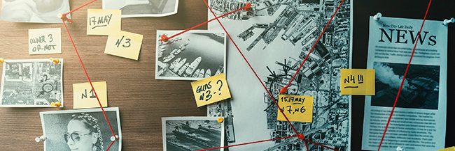
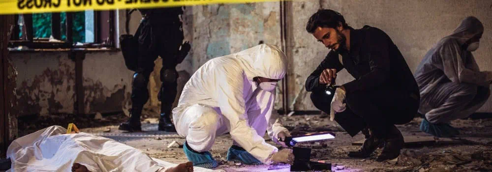
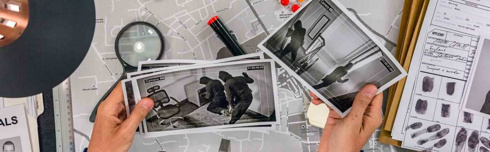
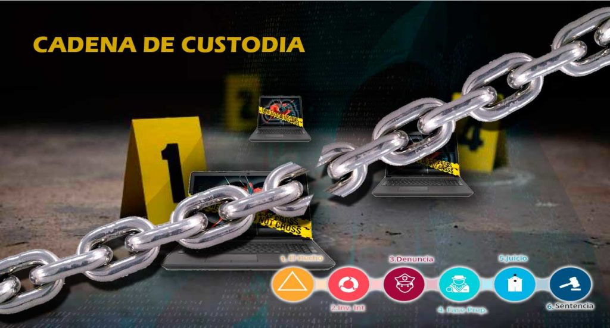
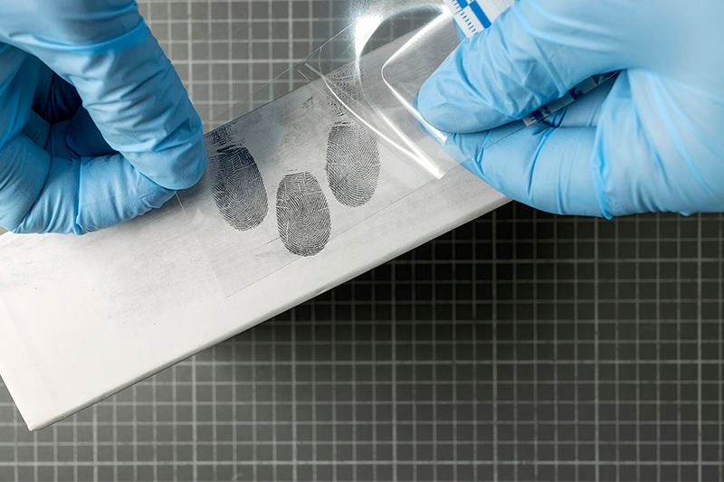
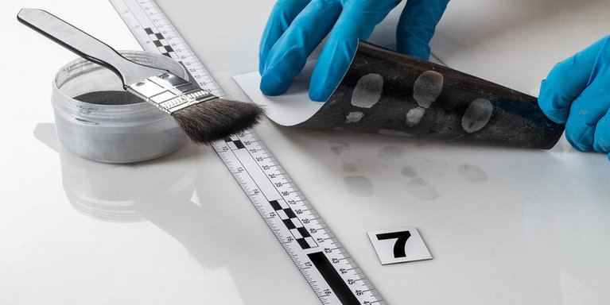
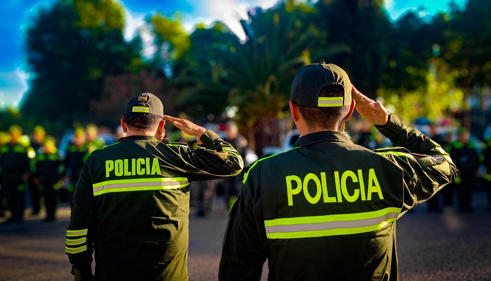

La investigación criminal es una herramienta fundamental dentro del sistema de justicia penal, ya que permite descubrir la verdad de los hechos a través de métodos científicos, el análisis de evidencias y la reconstrucción lógica de los acontecimientos delictivos.
Proceso científico que analiza delitos mediante evidencias físicas, testimoniales y técnicas para conocer la verdad.
Determinar la existencia del delito e identificar al autor mediante pruebas.
La investigación puede realizarse antes o después del delito dependiendo del caso.
La investigación criminal permite esclarecer hechos delictivos, garantizar justicia y evitar la impunidad. Además, ayuda a reconstruir los hechos mediante pruebas científicas, lo cual fortalece el sistema judicial.
Su correcta aplicación asegura que las decisiones judiciales se basen en pruebas objetivas y no en suposiciones, contribuyendo a una justicia más precisa y confiable.

El desarrollo de la investigación criminal se basa en la aplicación del método científico, principios fundamentales y técnicas de la criminalística que permiten analizar, interpretar y reconstruir los hechos delictivos.
Es la base de la investigación criminal para analizar hechos y obtener conclusiones válidas.
Son reglas fundamentales que explican cómo se produce un hecho delictivo.
Ciencia que analiza evidencias para esclarecer los hechos delictivos.
El desarrollo de la investigación criminal permite aplicar conocimientos científicos y técnicos para lograr resultados precisos. A través del análisis de evidencias y la aplicación de principios criminalísticos, se logra reconstruir los hechos y determinar responsabilidades.
Este proceso es fundamental para garantizar una justicia objetiva, evitando errores y asegurando que las conclusiones estén basadas en pruebas verificables.

La recolección de pruebas es un proceso fundamental en la investigación criminal, ya que permite obtener evidencias que servirán para identificar al autor del delito y reconstruir los hechos.
Recolección de evidencias físicas y biológicas.
Personal especializado en criminalística.
Inmediatamente después del delito.
| Tipo | Descripción |
|---|---|
| Orgánicas | Sangre, saliva, cabello, fluidos biológicos. |
| Inorgánicas | Armas, documentos, fibras, objetos. |
| Documentales | Archivos, mensajes, registros digitales. |

La cadena de custodia es el proceso que garantiza la integridad, autenticidad y conservación de las evidencias desde su recolección hasta su presentación en juicio.
Obtención de evidencias en la escena.
Protección y etiquetado de pruebas.
Traslado seguro de evidencias.
Estudio en laboratorio.

La identificación del autor consiste en determinar quién cometió el delito mediante técnicas científicas que analizan características únicas del individuo.
Estudio de las huellas dactilares, únicas e irrepetibles en cada persona.
Método más preciso basado en el análisis genético de muestras biológicas.
Identificación mediante testigos, fotografías o rueda de personas.

El análisis en la investigación criminal consiste en examinar, interpretar y relacionar las evidencias obtenidas en la escena del delito, con el objetivo de reconstruir los hechos y establecer la verdad.
Físicas, biológicas y digitales recolectadas en la escena.
Aplicación del método científico para analizar los hechos.
Conexión entre pruebas para reconstruir el delito.
Conclusiones que apoyan el proceso judicial.
Consiste en examinar cuidadosamente todos los indicios encontrados, como huellas, fluidos biológicos, objetos y documentos.
En esta etapa se analizan los datos obtenidos para encontrar relaciones entre las evidencias y construir hipótesis del delito.
Se establecen resultados finales basados en pruebas científicas, los cuales serán utilizados en el proceso judicial.
El análisis es esencial en la investigación criminal porque permite transformar evidencias en conocimiento útil. Gracias a este proceso, se logra reconstruir los hechos, identificar responsables y garantizar que la justicia se base en pruebas objetivas.
Sin un análisis adecuado, las evidencias carecen de valor, por lo que esta etapa es clave para evitar errores judiciales y asegurar una correcta administración de justicia.
